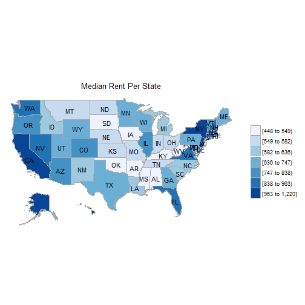

The following excercise is part of a course on learning to program in R given by Ari Lamstein. This particular excercise involves mapping the population of each state in the U.S. using the R package choroplethr. Definition a la Google: A choropleth map is a map that uses differences in shading, coloring or the placing of symbols within predefined areas to indicate the averaeg values of a property or quantity in those areas. The package choroplethr is thusly named as a play upon the type of math and the name of the language. Details on the package and examples of further use can be read on the CRAN.r website
First, download and install the relevant packages via install.packages(c("choroplethr","choroplethrMaps"
Once the packages are successfully installed, load them:library(choroplethr)
The state_choropleth function accepts a dataframe with two columns, the first containing the names of the region and the second containing a value that is the population in 2012. The length of the region column must match the number of regions that the function calls
 The df_county_demographics data set contains data such as the percent of people by race, the median rent, and median age.
By compiling a list of choropleths like these, it is then possible to compile a neat visualization of the change in a particular variable over time by using the animated_choropleth function.